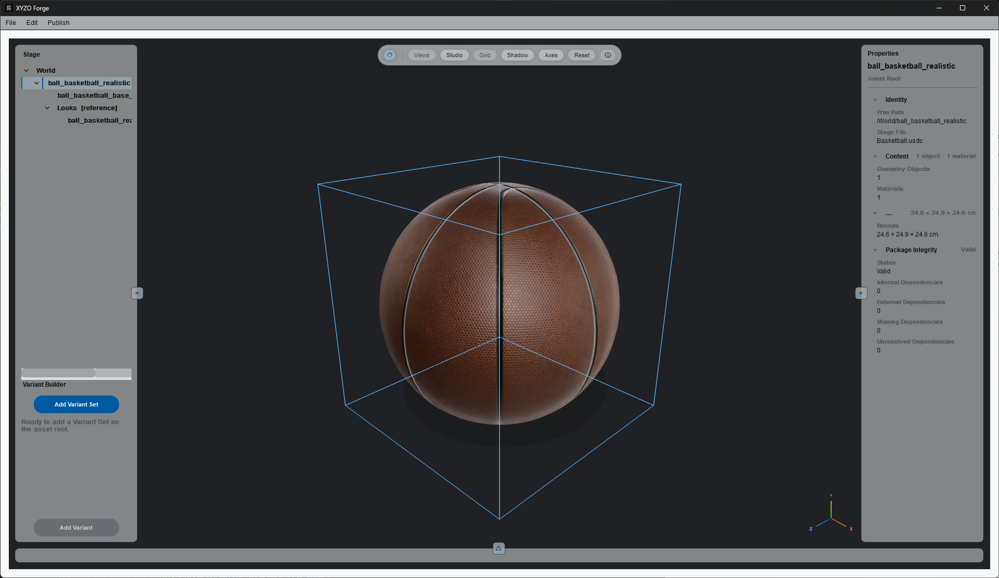

Normalize
XYZO turns varied source packages into a deterministic canonical structure. It preserves where each part came from.


package root
Basketball.xyzo
source/
traceable input evidence
content/
canonical asset content
Basketball.usdc
authoritative stage file
Basketball.xyzo
manifest and project record
canonical content
content/
textures/
trusted texture sources
artifacts/
derived and support outputs
basketball_look.usda
look and material layer
render_payload.usda
viewer-facing render payload
xyzoscene.json
canonical scene record
xyzosession.json
runtime and support session record
SUPPORTED SOURCE INTAKE
Forge accepts supported 3D source inputs and begins normalization into a deterministic canonical structure.
deterministic canonical structure working today